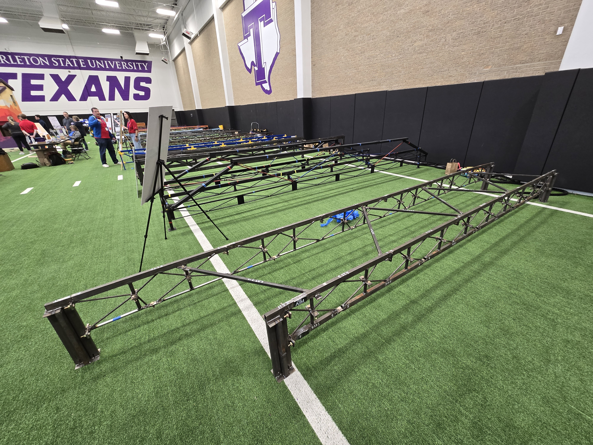
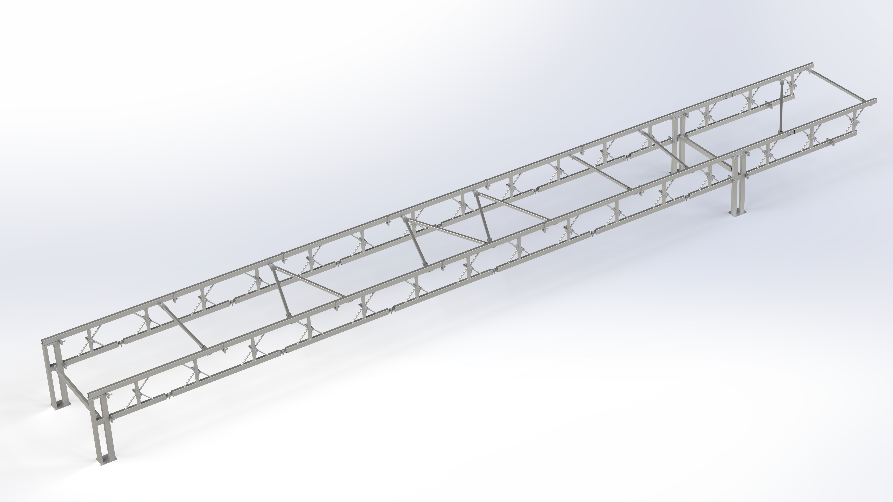

Steel Bridge was the first club I joined in college. In my first year on the team, I gained a lot of experience in metal fabrication, and I learned about the structure of the competition and how it affected the bridge's design. Although we didn't win any of the major awards, I had a lot of fun in my first year on the team. Below is an image of the bridge from my freshman year.

In my second year on the team, I got to do a lot more mentoring and supervision as the assistant fabrication lead, which was a new experience for me.
All of our work in improving the bridge fabrication process and constant quality checks culminated in our team placing 2nd in regionals, up from 7th the previous year.
The Texas A&M team got invited to nationals for the first time since 2019 beacuse of our work.
Although we didn't do great at nationals, we used it as a learning experience so that we can come back stronger next year.
I made a CAD model of the whole bridge to see how we could use it in our design process next year. Below is an image of the model (I would show off the acutal model like I do on other parts of this website, but I have to kept it secret).
